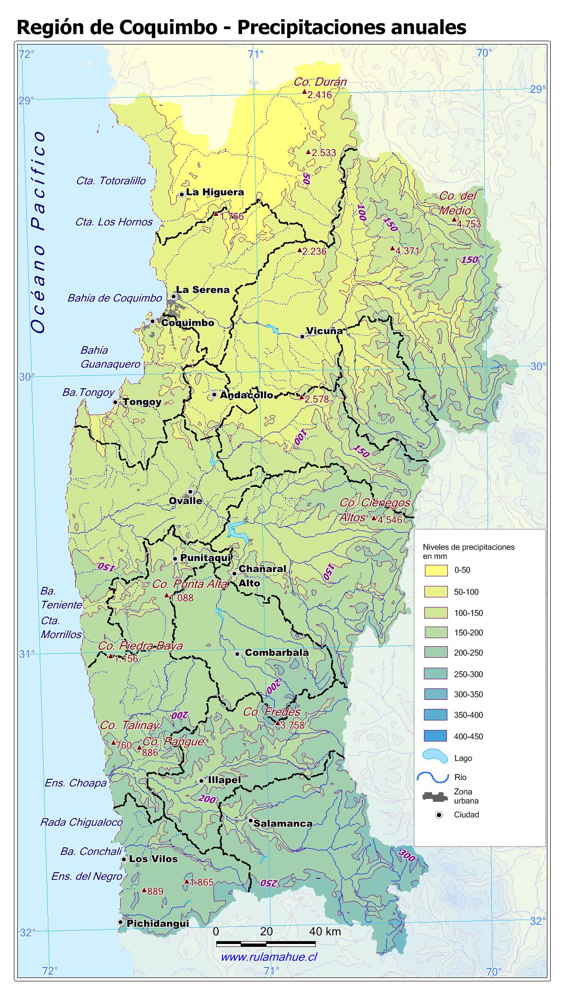
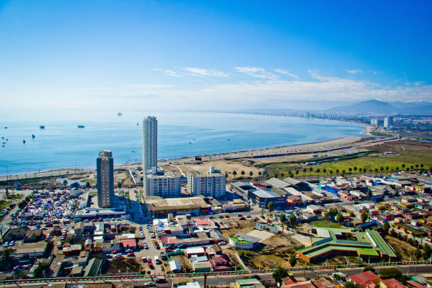

The Wheather Channel
El Tiempo 🌤️
Home
Nosotros
Regiones
Arica y Parinacota
Tarapacá
Antofagasta
Atacama
Coquimbo
Valparaíso
Santiago
Libertador General Bernardo O'Higgins
Maule
Ñuble
Biobío
La Araucanía
Los Ríos
Los Lagos
Aysén del General Carlos Ibáñez del Campo
Magallanes y de la Antártica Chilena
Contacto

🏃 Actividad deportiva
💧 Humedad:
🌫️ Calidad aire
🌸 Polen
☀️ Índice UV
🌅 Mañana
🌇 Tarde
🌙 Noche
📅 Pronóstico semanal
